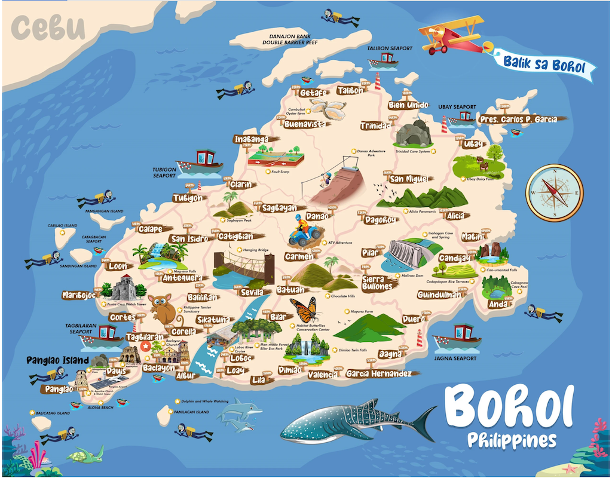

ABOUT BOHOL
Bohol is a captivating island province located in the Central Visayas region of the Philippines.
It is known for its stunning beaches, lush landscapes, and rich history.
The capital, Tagbilaran City, serves as the province's commercial hub,
offering a variety of hotels, restaurants, and shops where locally made products and handicrafts can be found.
The island is famous for its unique Chocolate Hills, a geological wonder of over 1,200 symmetrically shaped hills that turn brown during the dry season, resembling chocolate mounds.
Boholanos, the residents of Bohol, are known for their trading skills and industrious nature, often referred to as the "Ilocanos of the South."
The majority of the population speaks Cebuano and English.
Agriculture plays a significant role in Bohol's economy, with rice, coconut, and corn being the primary products.
Fishing is prevalent in the northern towns, and the province is also rich in minerals such as manganese, iron, and tin.
Handicrafts, like baskets, mats, and hats, are famous throughout the country.
Transportation to Bohol includes hydrofoils, domestic and international flights, large superferries, and domestic airplanes connecting major cities in the Philippines.
Bohol's picturesque landscapes and warm, friendly people make it a must-visit destination for any traveler.
BOHOL MAP
